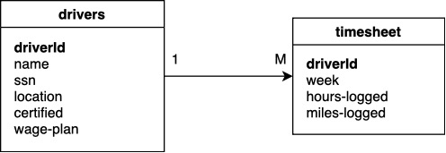

Agrupamiento y filtrado — 13:07 min
13:07 min | Última modificación: Octubre 6, 2021 | YouTube
Este tutorial esta basado en https://es.hortonworks.com/tutorial/how-to-process-data-with-apache-hive/
Definición del problema
A partir de la información contenida en las siguientes tablas, se desea crear una tabla que resume por cada conductor la suma de la cantidad de millas y horas.

Preparación
[3]:
import matplotlib
import matplotlib.pyplot as plt
import numpy as np
import pandas as pd
pd.set_option("display.notebook_repr_html", False)
Creación de la tabla drivers
A continuación se crea la tabla driverscomo un DataFrame de Pandas.
[4]:
drivers = pd.read_csv(
"https://raw.githubusercontent.com/jdvelasq/playground/master/datasets/drivers/drivers.csv",
sep=",",
thousands=None,
decimal=".",
)
Se obtiene los primeros cinco registros de la tabla para realizar una inspección rápida de los datos y verificar que los datos fueron cargados correctamente.
[5]:
drivers.head()
[5]:
driverId name ssn location \
0 10 George Vetticaden 621011971 244-4532 Nulla Rd.
1 11 Jamie Engesser 262112338 366-4125 Ac Street
2 12 Paul Coddin 198041975 Ap #622-957 Risus. Street
3 13 Joe Niemiec 139907145 2071 Hendrerit. Ave
4 14 Adis Cesir 820812209 Ap #810-1228 In St.
certified wage-plan
0 N miles
1 N miles
2 Y hours
3 Y hours
4 Y hours
Creación de la tabla timesheet
[6]:
timesheet = pd.read_csv(
"https://raw.githubusercontent.com/jdvelasq/playground/master/datasets/drivers/timesheet.csv",
sep=",",
thousands=None,
decimal=".",
)
display(timesheet.head(), 'len: ' + str(len(timesheet)))
driverId week hours-logged miles-logged
0 10 1 70 3300
1 10 2 70 3300
2 10 3 60 2800
3 10 4 70 3100
4 10 5 70 3200
'len: 1768'
Media de la cantidad de horas y millas de cada conductor por año
[5]:
mean_timesheet = timesheet.groupby("driverId").mean()
mean_timesheet.head()
[5]:
week hours-logged miles-logged
driverId
10 26.5 62.153846 2829.807692
11 26.5 70.038462 3448.076923
12 26.5 50.750000 2614.653846
13 26.5 52.442308 2579.346154
14 26.5 53.480769 2627.384615
[6]:
#
# Eliminación de la columna 'week'
#
mean_timesheet.pop('week')
mean_timesheet.head()
[6]:
hours-logged miles-logged
driverId
10 62.153846 2829.807692
11 70.038462 3448.076923
12 50.750000 2614.653846
13 52.442308 2579.346154
14 53.480769 2627.384615
Registros con valores por debajo de la media del grupo
[7]:
mean_hours_logged_by_driver = timesheet.groupby("driverId")["hours-logged"].transform(
"mean"
)
display(mean_hours_logged_by_driver.head(), len(mean_hours_logged_by_driver))
0 62.153846
1 62.153846
2 62.153846
3 62.153846
4 62.153846
Name: hours-logged, dtype: float64
1768
[8]:
timesheet_with_means = timesheet.copy()
timesheet_with_means["mean_hours-logged"] = mean_hours_logged_by_driver
timesheet_with_means.head()
[8]:
driverId week hours-logged miles-logged mean_hours-logged
0 10 1 70 3300 62.153846
1 10 2 70 3300 62.153846
2 10 3 60 2800 62.153846
3 10 4 70 3100 62.153846
4 10 5 70 3200 62.153846
[9]:
timesheet_below = timesheet_with_means[
timesheet_with_means["hours-logged"] < timesheet_with_means["mean_hours-logged"]
]
display(timesheet_below.head(), timesheet_below.tail())
driverId week hours-logged miles-logged mean_hours-logged
2 10 3 60 2800 62.153846
9 10 10 50 2500 62.153846
19 10 20 30 1200 62.153846
20 10 21 50 2500 62.153846
25 10 26 60 2600 62.153846
driverId week hours-logged miles-logged mean_hours-logged
1756 43 41 51 2701 52.884615
1760 43 45 46 2671 52.884615
1762 43 47 50 2572 52.884615
1763 43 48 52 2517 52.884615
1767 43 52 48 2764 52.884615
Cómputo de la cantidad de horas y millas de cada conductor por año
[10]:
#
# Suma por grupo de todas las columnas numéricas
#
sum_timesheet = timesheet.groupby("driverId").sum()
sum_timesheet.head(10)
[10]:
week hours-logged miles-logged
driverId
10 1378 3232 147150
11 1378 3642 179300
12 1378 2639 135962
13 1378 2727 134126
14 1378 2781 136624
15 1378 2734 138750
16 1378 2746 137205
17 1378 2701 135992
18 1378 2654 137834
19 1378 2738 137968
[11]:
#
# Se elimina la columna week
#
sum_timesheet = sum_timesheet[["hours-logged", "miles-logged"]]
sum_timesheet.head()
[11]:
hours-logged miles-logged
driverId
10 3232 147150
11 3642 179300
12 2639 135962
13 2727 134126
14 2781 136624
[12]:
#
# Filtrado
#
timesheet.groupby("driverId")['hours-logged'].transform('sum')
[12]:
0 3232
1 3232
2 3232
3 3232
4 3232
...
1763 2750
1764 2750
1765 2750
1766 2750
1767 2750
Name: hours-logged, Length: 1768, dtype: int64
[19]:
timesheet.groupby("driverId")['hours-logged'].agg([min, max])
[19]:
min max
driverId
10 0 76
11 0 92
12 0 60
13 10 60
14 45 60
15 45 60
16 45 60
17 20 60
18 45 60
19 45 60
20 0 60
21 45 60
22 45 60
23 45 60
24 0 60
25 45 60
26 45 60
27 45 60
28 45 60
29 45 60
30 45 60
31 45 60
32 45 60
33 46 60
34 45 60
35 45 60
36 45 60
37 45 59
38 45 60
39 45 60
40 45 60
41 45 60
42 45 60
43 46 60
Unión de las tablas usando join
[14]:
summary = pd.merge(
sum_timesheet,
drivers[["driverId", "name"]],
on="driverId",
)
summary
[14]:
driverId hours-logged miles-logged name
0 10 3232 147150 George Vetticaden
1 11 3642 179300 Jamie Engesser
2 12 2639 135962 Paul Coddin
3 13 2727 134126 Joe Niemiec
4 14 2781 136624 Adis Cesir
5 15 2734 138750 Rohit Bakshi
6 16 2746 137205 Tom McCuch
7 17 2701 135992 Eric Mizell
8 18 2654 137834 Grant Liu
9 19 2738 137968 Ajay Singh
10 20 2644 134564 Chris Harris
11 21 2751 138719 Jeff Markham
12 22 2733 137550 Nadeem Asghar
13 23 2750 137980 Adam Diaz
14 24 2647 134461 Don Hilborn
15 25 2723 139180 Jean-Philippe Playe
16 26 2730 137530 Michael Aube
17 27 2771 137922 Mark Lochbihler
18 28 2723 137469 Olivier Renault
19 29 2760 138255 Teddy Choi
20 30 2773 137473 Dan Rice
21 31 2704 137057 Rommel Garcia
22 32 2736 137422 Ryan Templeton
23 33 2759 139285 Sridhara Sabbella
24 34 2811 137728 Frank Romano
25 35 2728 138727 Emil Siemes
26 36 2795 138025 Andrew Grande
27 37 2694 137223 Wes Floyd
28 38 2760 137464 Scott Shaw
29 39 2745 138788 David Kaiser
30 40 2700 136931 Nicolas Maillard
31 41 2723 138407 Greg Phillips
32 42 2697 136673 Randy Gelhausen
33 43 2750 136993 Dave Patton
Almacenamiento de los resultados
[15]:
summary.to_csv(
'/tmp/summary.csv',
sep = ',',
header = True,
index = False,
)
#
# Visualización del contenido del archivo
#
!head /tmp/summary.csv
driverId,hours-logged,miles-logged,name
10,3232,147150,George Vetticaden
11,3642,179300,Jamie Engesser
12,2639,135962,Paul Coddin
13,2727,134126,Joe Niemiec
14,2781,136624,Adis Cesir
15,2734,138750,Rohit Bakshi
16,2746,137205,Tom McCuch
17,2701,135992,Eric Mizell
18,2654,137834,Grant Liu
Ordenamiento por la cantidad de millas registradas
[16]:
top10 = summary.sort_values(by="miles-logged", ascending=False).head(10)
top10
[16]:
driverId hours-logged miles-logged name
1 11 3642 179300 Jamie Engesser
0 10 3232 147150 George Vetticaden
23 33 2759 139285 Sridhara Sabbella
15 25 2723 139180 Jean-Philippe Playe
29 39 2745 138788 David Kaiser
5 15 2734 138750 Rohit Bakshi
25 35 2728 138727 Emil Siemes
11 21 2751 138719 Jeff Markham
31 41 2723 138407 Greg Phillips
19 29 2760 138255 Teddy Choi
Creación de un gráfico de barras horizontales
[17]:
#
# La columna 'name' pasa a ser el nombre de las filas
#
top10 = top10.set_index('name')
#
# Paleta de colores:
#
# tab:blue tab:red tab:pink
# tab:orange tab:purple tab:gray
# tab:green tab:brown tab:olive
# tab:cyan
#
top10['miles-logged'].plot.barh(color='tab:orange', alpha=0.6)
plt.gca().invert_yaxis()
plt.gca().get_xaxis().set_major_formatter(
matplotlib.ticker.FuncFormatter(
lambda x, p: format(int(x), ',')
)
)
plt.xticks(rotation = 90)
plt.gca().spines["left"].set_color("lightgray")
plt.gca().spines["bottom"].set_color("gray")
plt.gca().spines["top"].set_visible(False)
plt.gca().spines["right"].set_visible(False)

Creación de un gráfico de barras verticales
[18]:
top10['miles-logged'].plot.bar(color='tab:blue', alpha=0.7)
plt.gca().get_yaxis().set_major_formatter(
matplotlib.ticker.FuncFormatter(lambda x, p: format(int(x), ',')))
plt.gca().spines["left"].set_color("lightgray")
plt.gca().spines["bottom"].set_color("gray")
plt.gca().spines["top"].set_visible(False)
plt.gca().spines["right"].set_visible(False)